Transformando teoria em código
sólido e eficiente.
Sou um Engenheiro de Software em formação pela PUC-Rio (Pontifícia
Universidade Católica do Rio de Janeiro) com forte interesse no
desenvolvimento de sistemas. Recentemente, venho aprofundando meus
conhecimentos e aplicando a teoria na prática através de projetos
acadêmicos e da minha pós-graduação. Minha principal stack de estudo é
Python, sou movido a desafios e procuro um ambiente
onde eu possa agregar valor desde o primeiro dia, enquanto continuo
aprendendo com a equipe.
Meus Projetos
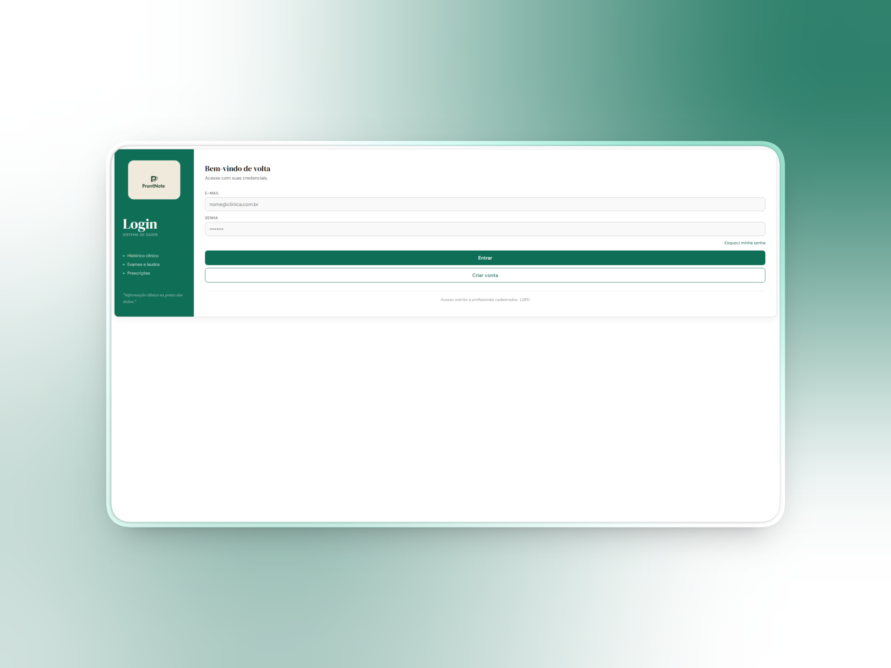
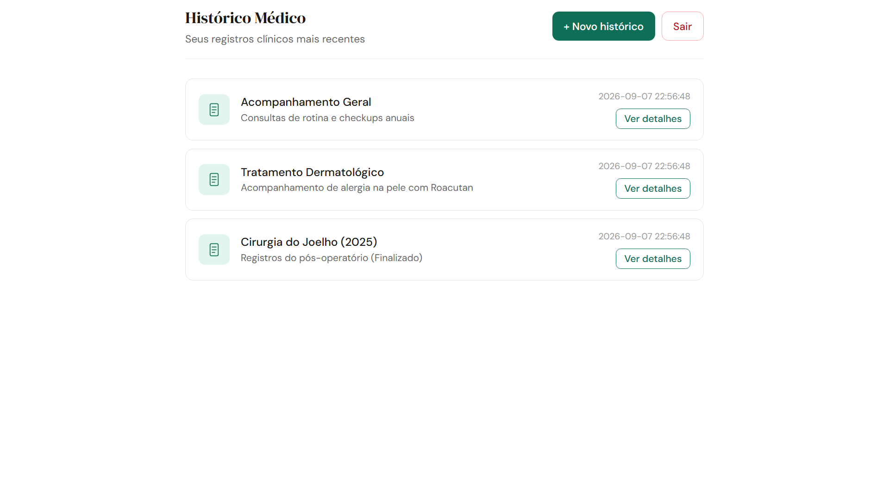
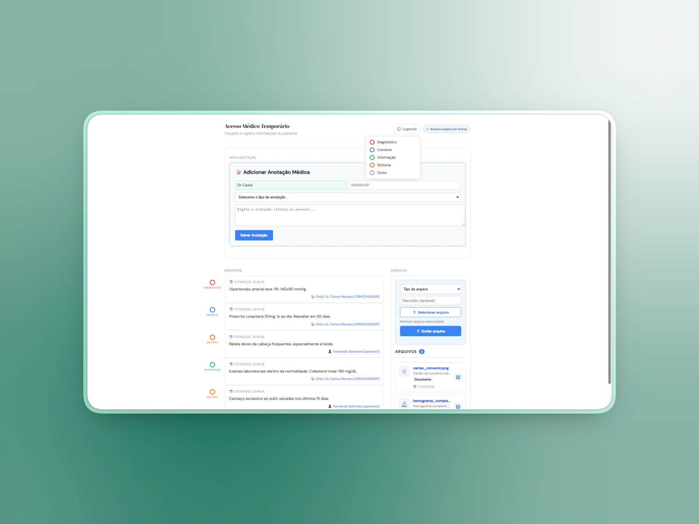
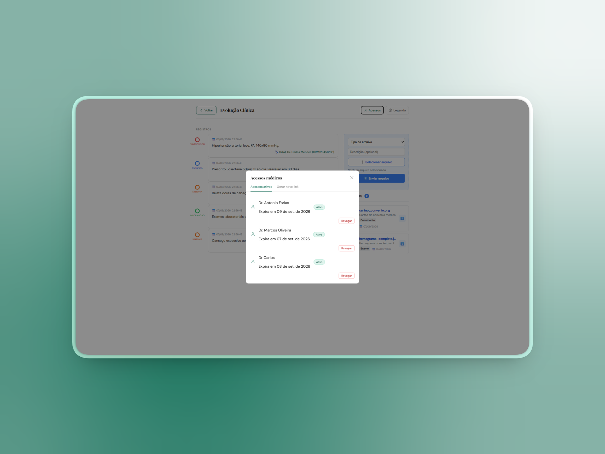
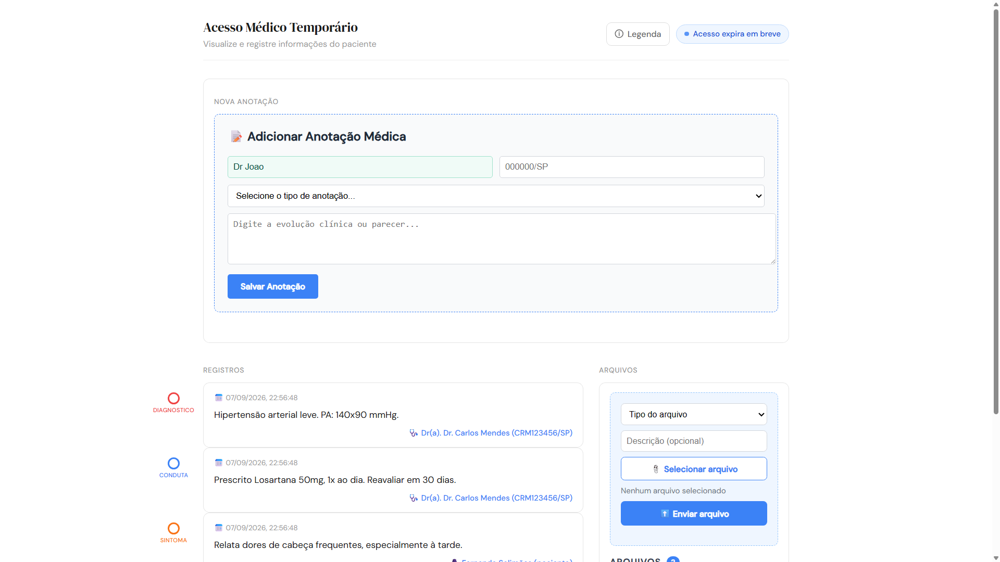
ProntNote
Projeto full-stack de pós-graduação: um prontuário médico
centrado no paciente, que tem total controle sobre seus dados de
saúde.
-
O paciente gerencia seu histórico e concede acesso aos médicos
via links temporários.
-
Durante o acesso, o médico enriquece o prontuário com arquivos,
condutas, diagnósticos e sintomas.
-
O resultado é um registro centralizado que auxilia todo o
tratamento contínuo.
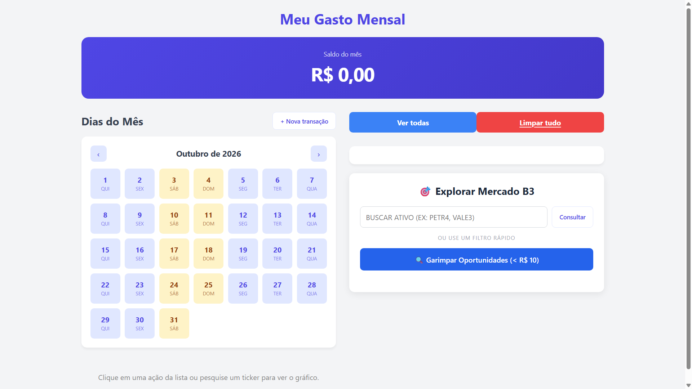
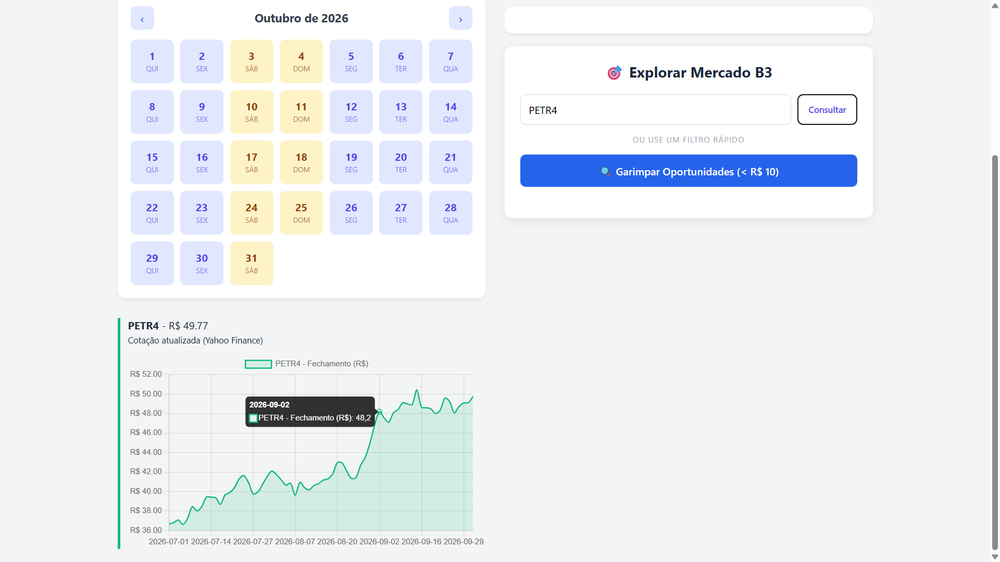
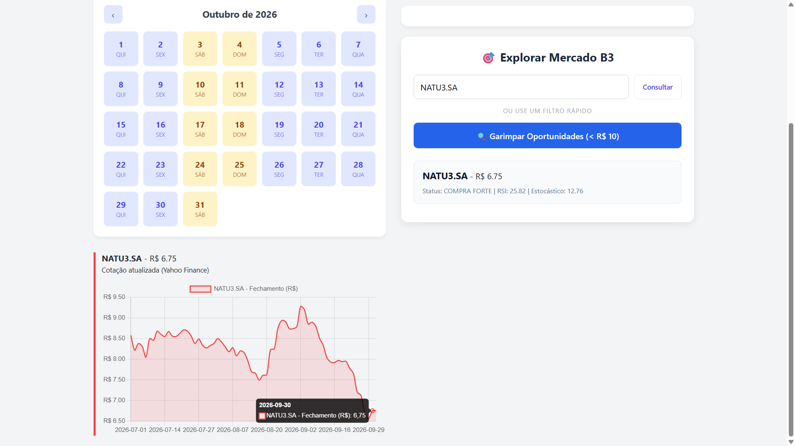
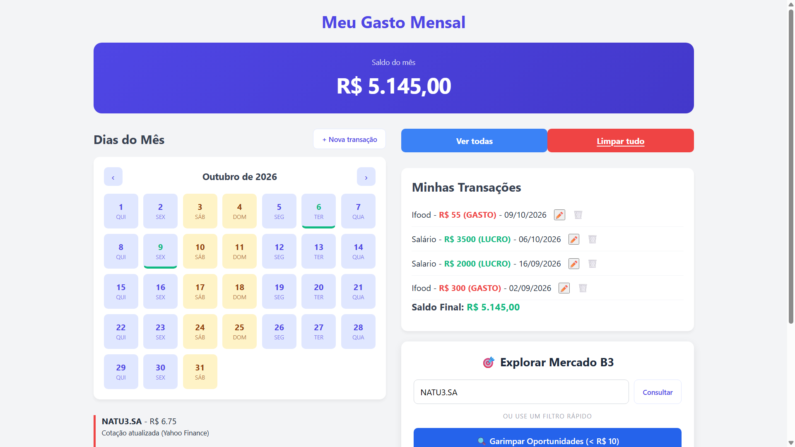
Finanças & Investimentos
Aplicação full-stack que une gestão de orçamento pessoal e
rastreamento do mercado de ações, estruturada em
microsserviços conteinerizados com Docker e com
API GraphQL dedicada à autenticação.
-
Visão em calendário para acompanhar receitas e despesas de forma
instantânea.
-
Scanner de ativos da B3 que busca oportunidades de sobrevenda
abaixo de R$ 10 (RSI < 30 e Estocástico < 20).
-
Dados brutos capturados e validados pela própria entidade.
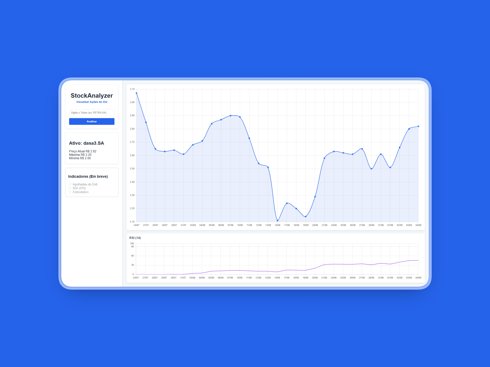
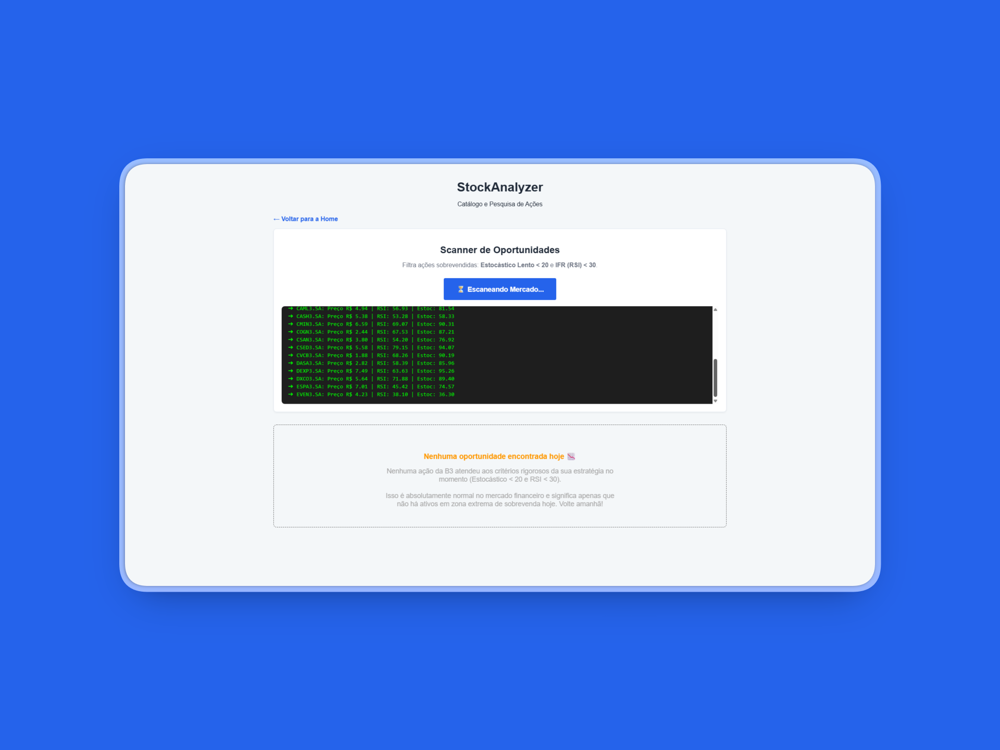
Dashboard Financeiro: Home Broker B3
Plataforma de análise de investimentos que consome dados reais do
mercado pela biblioteca Fundamentus e transforma
informações da B3 em visualizações para tomada de decisão.
-
Análise gráfica: histórico de 30 dias com RSI,
Didi Index e Estocástico.
-
Scanner de mercado: mapeia as ações do dia com
a mesma estratégia de sobrevenda, calculada com pandas-ta.
Entre em Contato
Gostou do meu trabalho, tem alguma dúvida ou quer bater um papo sobre
tecnologia e oportunidades? Fique à vontade para me mandar uma
mensagem!
talesleopoldinobr@gmail.com
Aracaju, SE, Brasil